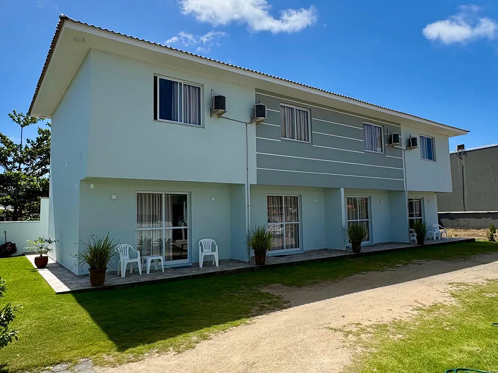
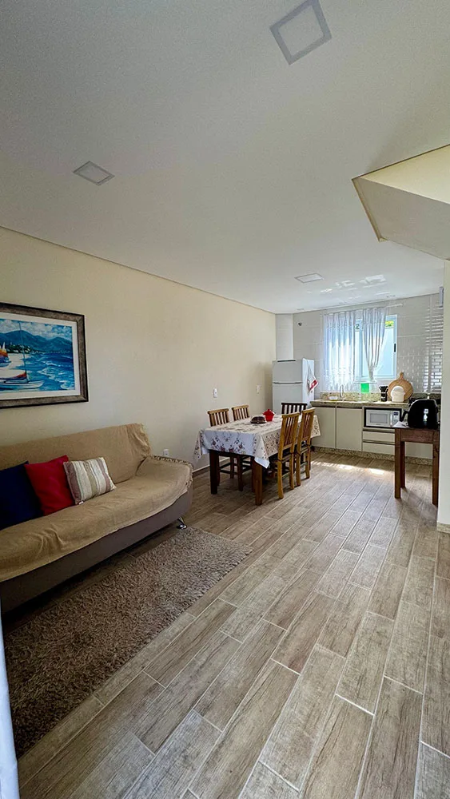

Novos e equipados
O essencial para se sentir em casa.

PRAIA DA PINHEIRA · SANTA CATARINA
Apartamentos acolhedores, a 150m da praia.
Um convite para desacelerar e se sentir em casa.
BEM-VINDO AO PÔR DO SOL
Entre um mergulho e uma caminhada, tenha um lugar para chamar de seu. Na Praia da Pinheira, nossos apartamentos reúnem o conforto de casa e a liberdade de estar pertinho do mar.
O essencial para se sentir em casa.
Troque os sapatos pelos chinelos.
Um respiro na sua rotina.
Praticidade para aproveitar os dias.

UM CANTINHO PARA FICAR BEMNOSSAS ACOMODAÇÕES
São quatro apartamentos para até cinco pessoas cada, com dois quartos no andar superior e ambientes para compartilhar os melhores momentos da viagem.
UM OLHAR POR AQUI
Detalhes de um lugar para descansar.
Toque nas fotos para ver de perto.
SUA PRÓXIMA PAUSA
Escolha as datas e conte quem vem com você. Vamos conversar pelo WhatsApp sobre disponibilidade e valores.
Sem pressa, sem complicação.
Atendimento direto com o residencial.
EXPERIÊNCIAS DE QUEM JÁ VEIO
Veja as avaliações dos hóspedes no Google Maps.
Ler avaliações no Google ↗ENTRE O MAR E A TRANQUILIDADE
Rua Sol e Mar · Praia da Pinheira
Palhoça, Santa Catarina
A 150m da beira da praia e perto do centrinho, para aproveitar a Pinheira no seu ritmo.
Como chegar ↗